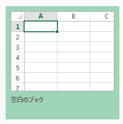

# -*- coding: utf-8 -*- import os import sys import datetime from xml.etree import ElementTree import GMSDLib reload(GMSDLib) from GMSDLib import * class ParamCls: # 初期化処理 def __init__(self, settingPath): # OSチェック if Env.getOS() != OS.WINDOWS: print u"利用可能OSはWindows7/10のみです OS:{0} version:{1}".format(Env.getOS(), Env.getOSVersion()) sys.exit() # OSのバージョンチェック if "10" in Env.getOSVersion(): self.osVersion = GMSDLib.WINDOWS_10 elif "6" in Env.getOSVersion(): self.osVersion = GMSDLib.WINDOWS_7 else: print u"利用可能OSはWindows7/10のみです OS:{0} version:{1}".format(Env.getOS(), Env.getOSVersion()) sys.exit() #パスは絶対パスに変換して保存しておく # xmlPath: 設定XMLのフルパス self.xmlPath = os.path.abspath(settingPath) #ElementTreeに変換する # tree: 設定XMLのTree構造変換オブジェクト self.tree = ElementTree.parse(self.xmlPath) #フォルダ初期設定 initFolder(self.tree.findtext(u'.//log/path')) initFolder(self.tree.findtext(u'.//capture/path')) initFolder(self.tree.findtext(u'.//excel/path')) ### ログファイルの設定 #設定からログファイルの出力先を取得する logDirPath = self.tree.findtext(u'.//log/path') #本日日時を取得する today = datetime.datetime.today().strftime("%Y%m%d-%H%M%S") #ログファイルの出力を設定する logPath = u"{0}/GMSD{1}.log".format(logDirPath, today) Debug.setUserLogFile(logPath) #ログファイルパス出力 GMSDLib.logger(u"ログファイル設定完了: {0}".format(logPath)) #OSバージョンによってUIイメージの切り替え if self.osVersion == GMSDLib.WINDOWS_7: self.browserImg = elif self.osVersion == GMSDLib.WINDOWS_10: self.browserImg = ##### ブラウザ設定 # browserApp: ブラウザのアプリオブジェクト。フォーカス切り替え等に使用 # browserReg: ブラウザの表示範囲 (self.browserApp, self.browserReg) = \ openFocusApp(self.tree.findtext(u'.//browser/name'), self.tree.findtext(u'.//browser/exe'), self.browserImg) self.excelVersion = self.tree.findtext(u'.//excel/version') #ExcelバージョンによってUIイメージの切り替え if self.excelVersion == GMSDLib.EXCEL_VERSION_2013: self.excelImg =  elif self.excelVersion == GMSDLib.EXCEL_VERSION_2010: #日本語解析を行わず、画像で文字列判定を行う場合、 #ヒット率を最大まであげておくと安全（画像での文字判定は結構いい加減） #ただし、OSの違い等で微妙に色が変わったりした時にもヒットしなくなるので善し悪し self.excelImg = Pattern().exact() elif self.excelVersion == GMSDLib.EXCEL_VERSION_2003: if self.osVersion == GMSDLib.WINDOWS_7: self.excelImg = elif self.osVersion == GMSDLib.WINDOWS_10: self.excelImg = else: GMSDLib.logger(u"Excelのバージョンが対応外です。 version: {0}".format(self.excelVersion)) sys.exit() ##### エクセル設定 # excelApp: エクセルのアプリオブジェクト。フォーカス切り替え等に使用 # excelReg: エクセルの表示範囲 (self.excelApp, self.excelReg) = \ openFocusApp(self.tree.findtext(u'.//excel/name'), self.tree.findtext(u'.//excel/exe'), self.excelImg) if self.excelVersion == GMSDLib.EXCEL_VERSION_2013: # 空白のブックを作成する click() #ブックを作成したので、Excelイメージ切り替え self.excelImg = elif self.excelVersion == GMSDLib.EXCEL_VERSION_2003: # ブックが開いていない場合、新規作成 if exists() == None: click() ###-------------------------- # 指定されたアプリを開き、フォーカスを取得する # appName: アプリウィンドウ名 # appExe: アプリ起動フルパス # appImg: アプリが起動した事を確認する画像 def openFocusApp(appName, appExe, appImg): GMSDLib.logger(u"openFocusApp: {0}, {1}".format(appName, appExe)) #アプリをいったん閉じる App.close(appName) wait(2) #アプリを開く #この段階ではアプリ情報は保持しない App.open(appExe) try: # 最大30秒まで、指定された画像が表示され、起動が完了するまで待つ wait(appImg, 30) except FindFailed as e: # 指定時間待っても画像が取得できなかった場合、検索失敗エラーが発生する logger(u"openFocusApp起動失敗 *** message:{0}".format(e.message)) sys.exit() except Exception as e2: #検索失敗以外はそのままエラーを投げる raise e2 #アプリ名をキーとして、アプリにフォーカスしてオブジェクトを保持する app = App.focus(appName) GMSDLib.logger(u"app.hasWindow(): {0}".format(app.hasWindow())) GMSDLib.logger(u"app.getPID(): {0}".format(app.getPID())) GMSDLib.logger(u"app.getName(): {0}".format(app.getName())) GMSDLib.logger(u"{0}: オープン成功".format(appName)) wait(5) #最前面に出ているアプリの範囲を取得し、検索範囲を少しでも限定する #こうする事で多少なりとも処理が速くなる reg = Region(App.focusedWindow()) #アプリのタイムアウトを設定する #デフォルトは3秒待つので、動作がどうしても遅くなってしまう #あらかじめ短く設定しておき、必要に応じて待機時間を長くとればサクサク動く reg.setAutoWaitTimeout(0.1) return (app, reg) ###------------- # フォルダの初期化を行う # 存在チェックを行い、なければ生成する # def initFolder(path): #フォルダが存在するか調べる if os.path.isdir(path) == False: # loggerの初期化前なので、printのみ print u"フォルダ生成 path={0}".format(path) #存在しなかった場合、作成する os.makedirs(path)